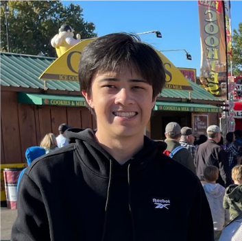

I am Ben and this is my ITIS3135 First Course Page
.
Introduction
Ben S. Stahlman || Blind Seagull

Me at the state fair with my family cropped out
Personal Background: My name is Ben and i'm from Apex NC. I came to Charlotte a couple years ago for school. I have a dog that I love very much. In my spare time I like to watch sports, play video games, and play with my dog.
Academic background: Current junior here with a concentration in software engineering. I took a couple computer classes in high school but really started getting into it in college.
Background in this subject: None. I've made sites on wix and weebly but nothing by coding.
Primary Computer Platform: Windows 11 laptop.
Courses I'm Taking & Why:
ITIS 3135 Web Design - Major Requirement. Plus it would be cool to know how to make a website
ITSC 3146 Intro to Operating Systems - Major requirement. Learning about operating systems is important.
ITCS 3160 Databases - I'm pretty sure this is also a major requirement. I also heard that it was easy. So hopefully I won't have a hard time this semester.
ITCS 3153 Intro to AI - Since the world is sort of shifting direction towards AI, I thought it would be a good idea to take this class.
ITIS 3130 Human Centered Computing - I'm pretty sure this is an elective but I heard it was easy too.
Funny/Interesting item about yourself: I'm color blind. In my 20 years of life and telling people that, 100% of them point to something and ask me what color it is.